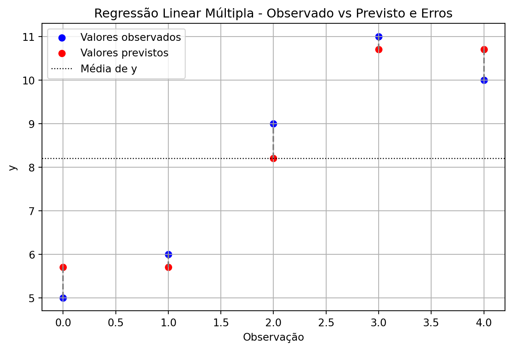

A regressão linear é uma técnica estatística usada para modelar a relação entre variáveis. O objetivo é explicar uma variável dependente \(y\) com base em uma ou mais variáveis independentes \(x\).
Regressão Linear Simples
Definição
Modela a relação entre duas variáveis:
- Uma variável dependente \(y\)
- Uma variável independente \(x\)
Fórmula
\[
\hat{y} = \beta_0 + \beta_1 x + \varepsilon
\]
\(\hat{y}\): valor previsto
\(\beta_0\): intercepto
\(\beta_1\): coeficiente angular
\(x\): variável explicativa
\(\varepsilon\): erro
O que é o Intercepto (\(\beta_0\))?
O intercepto (também chamado de coeficiente linear, \(\beta_0\) ou \(a\) em alguns livros) é o valor de \(y\) quando \(x=0\), ou onde a reta cruza o eixo \(y\).
Ele dá a “altura de partida” da reta. Em alguns contextos, o intercepto tem interpretação prática (ex: salário inicial quando anos de experiência = 0).
O que é o Coeficiente Angular (\(\beta_1\))?
É o número que indica quanto a variável \(y\) varia quando \(x\) aumenta em uma unidade.
Se \(\beta_1 = 3\), cada aumento de 1 unidade em \(x\) causa aumento de 3 unidades em \(y\).
Se \(\beta_1 < 0\), a relação é decrescente.
O que é o Erro (\(\varepsilon\))?
Representa a diferença entre o valor observado da variável dependente \(y\) e o valor previsto pelo modelo \(\hat{y}\)
\[
\varepsilon = y - \hat{y}
\]
Ele representa tudo que influência \(y\) e que não é explicado pela variável explicativa \(x\) incluída no modelo.
Em outras palavras:
O modelo tenta explicar \(y\) com base em \(x\) através da relação linear \(\hat{y} = \beta_0 + \beta_1 x\).
O erro é o que sobra da parcela que \(y\) que não pode ser prevista pelo modelo.
Inclui fatores aleatórias, ruído de medição, variáveis omitidas ou influências externas não capturadas pelo modelo.
Se os dados seguem exatamente a reta do modelo, o erro será zero. Em dados reais, os erros quase sempre são diferentes de zero, e a análise deles ajuda a avaliar o quão bom é o modelo.
O exemplo a seguir segue exatamente a reta do modelo e por isso o erro acaba sendo zero.
Exemplo de Regressão Linear Simples
Suponha a função:
\[
y = 2 + 3x
\]
x
y
0
2
1
5
2
8
Intercepto \(\beta_0 = 2\)
Inclinação \(\beta_1 = 3\)
Cálculo dos Coeficientes
O método dos mínimos quadrados calcula os coeficientes que minimizam a soma dos quadrados dos erros.
Esse modelo diz, por exemplo, que: - Cada quilômetro rodado reduz o valor do carro em R$ 0,05 - Cada ano de fabricação a mais aumenta o valor em R$ 300 - Veículos a álcool valem R$ 1.000 a mais, em média, que os a gasolina (assumindo \(x_3 = 1\))
Exemplo Prático em Python (Regressão Linear Múltipla)
import numpy as npimport matplotlib.pyplot as pltfrom sklearn.linear_model import LinearRegression# Variáveis explicativas (2 variáveis: x1 e x2)X = np.array([ [1, 2], [2, 1], [3, 3], [4, 5], [5, 4]])# Variável respostay = np.array([5, 6, 9, 11, 10])# Ajustando o modelomodelo = LinearRegression()modelo.fit(X, y)# Resultadosintercepto = modelo.intercept_coeficientes = modelo.coef_y_pred = modelo.predict(X)# Calculando o erro (resíduo)erro = y - y_pred # ε_i = y_i - ŷ_i# Impressõesprint("Intercepto (b0):", intercepto)print("Coeficientes (b1, b2):", coeficientes)print("Valores previstos (ŷ):", y_pred)print("Erro (ε = y - ŷ):", erro)print("Soma dos erros (≈0):", np.sum(erro))print("Média dos erros (≈0):", np.mean(erro))# Gráfico dos resíduosplt.figure(figsize=(8,5))plt.scatter(range(len(y)), y, label='Valores observados', color='blue')plt.scatter(range(len(y_pred)), y_pred, label='Valores previstos', color='red')for i inrange(len(y)): plt.vlines(i, y_pred[i], y[i], color='gray', linestyle='--') # linhas verticais = errosplt.axhline(y=np.mean(y), color='black', linestyle=':', linewidth=1, label='Média de y')plt.xlabel('Observação')plt.ylabel('y')plt.title('Regressão Linear Múltipla - Observado vs Previsto e Erros')plt.legend()plt.grid(True)plt.show()
Intercepto (b0): 3.200000000000001
Coeficientes (b1, b2): [0.83333333 0.83333333]
Valores previstos (ŷ): [ 5.7 5.7 8.2 10.7 10.7]
Erro (ε = y - ŷ): [-0.7 0.3 0.8 0.3 -0.7]
Soma dos erros (≈0): 1.7763568394002505e-15
Média dos erros (≈0): 3.552713678800501e-16

Exemplo prático com gráfico comparando a regressão linear simples e múltipla
Interpretação e Limitações Preditivas da Regressão Linear
A regressão linear é frequentemente usada como modelo preditivo, mas é importante entender suas reais capacidades e limitações.
O que a Regressão Linear faz bem?
A regressão linear drescreve a tendência média de uma variável resposta \(y\) em função de uma ou mais variáveis explicativas \(x\).
Ela é excelente para:
Modelar relações lineares simples
Observar comportamentos médios
Interpretar coeficientes (quanto uma variável impacta a outra, em média)
Avaliação descritiva e inferencial
Como modelo preditivo?
A regressão linear não é robusta como modelo preditivo em situações reais com dados complexos. Ela assume uma série de condições ideais:
Linearidade da relação entre \(x\) e \(y\):
Se a relação real entre \(x\) e \(y\) não for linear, o modelo ajusta uma reta/plano onde a relação é curva ou mais complexa, então o “erro” que sobra (resíduo) não é mais puro ruído, mas carrega padrão que deveria estar na parte explicada.
Homocedasticidade (variância constante dos resíduos):
Quando a variância do erro muda com \(x\), as estimativas de coeficientes ainda podem ser não-viesadas, mas as previsões terão incertezas mal estimadas, aumentando a chance de erros grandes.
Normalidade dos erros:
Essencial para validade de testes e intervalos de confiança. Se violada, a incerteza da previsão é mal quantificada, afetando a confiabilidade das predições.
Ausência de multicolinearidade (na regressão múltipla):
Quando variáveis explicativas estão muito correlacionadas, o modelo tem dificuldade em distinguir seus efeitos individuais, com coeficientes instáveis, pequenas mudanças nos dados geram grandes mudanças nas previsões.
Quando essas condições não são atendidas, a capacidade preditiva cai drasticamente.
Forma correta de interpretar
Regressão linear é um método estatístico que estima a relação média entre uma variável resposta e uma ou mais variáveis explicativas.
Embora útil para descrever tendências, possui limitações como modelo preditivo em cenários complexos ou não lineares.
Regressão linear é útil para descrever a tendência média de como \(y\) varia em função de \(x\) (ou de vários \(x\), no caso múltiplo).
Quando usar regressão linear?
Use regressão linear quando seu objetivo for:
Entender uma relação média entre variáveis
Testar hipóteses estatísticas
Explicar variações médias em \(y\)
Prever dentro de um intervalo bem comportado, onde os dados sigam aproximadamente uma tendência linear
Modelos alternativos para previsão robusta
Se seu objetivo é previsão com alta acurácia, considere modelos mais sofisticados, como:
Regressão polinomial
Árvores de decisão e Random Forest
Regressão Lasso/Ridge
Modelos de séries temporais (ARIMA, Prophet)
Redes neurais (deep learning)
Conclusão
A regressão linear é uma excelente ferramenta para representar tendências e compreender relações entre variáveis, mas deve ser usada com cautela como modelo preditivo em contextos reais complexos.